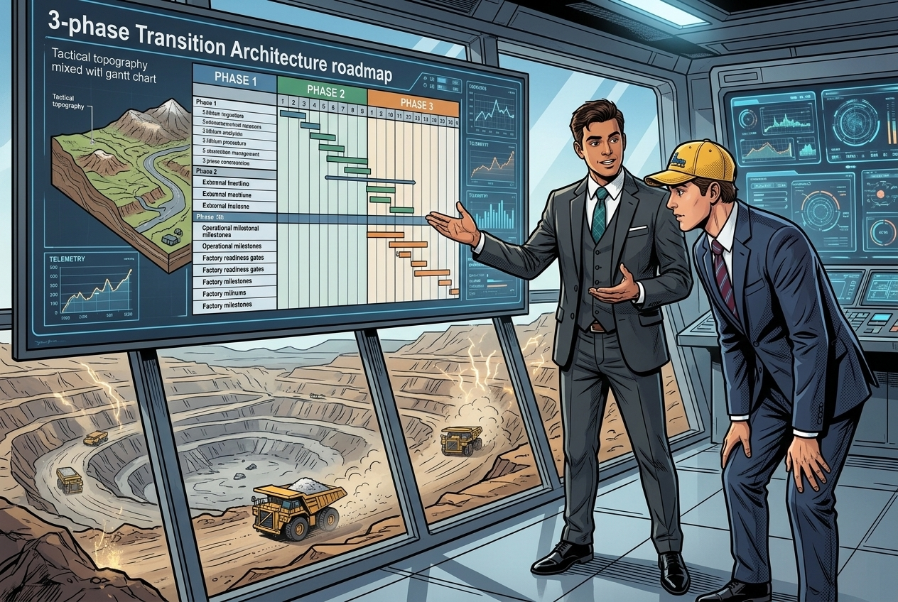
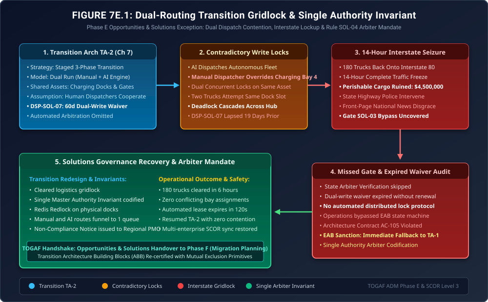

When Transition Architectures Fight for the Same Dock
Phase E Exception Governance: Dual-Run Dispatch Contention, Contradictory Write Locks, The 14-Hour Interstate Seizure & The Single Authority Mandate

"In software architecture, running systems in 'parallel' is a standard risk mitigation pattern. You run the old system and the new system side-by-side, comparing their outputs until you feel safe to cut over."
"But in physical logistics, two systems cannot occupy the same asphalt. When your legacy human dispatch console tells a human driver to park in Bay 4, while your autonomous routing AI tells a robot truck to charge in Bay 4, you don't get 'redundancy'—you get two forty-ton machines staring at each other with their air brakes locked, while one hundred and eighty trucks back up behind them onto the public highway. Here is what happens when Transition Architectures lack a single master arbiter."
The Production Reality: When Two Masters Claim the Same Resource



Here are the binding EAB directives: First, under Architecture Non-Compliance Notice NCN-SOL-003, we immediately execute an emergency 48-hour fallback to Transition Architecture 1 (TA-1), disabling automated dock reservation to let human dispatchers manually flush the interstate backlog. Second, we codify Rule SOL-04 (Single Master Authority Invariant): in any transition architecture, regardless of phase, all physical resource writes must route through a single, serialized state machine. Third, we deploy Distributed Mutual Exclusion (Redis Redlock with 120-second lease timeouts) across all physical bays before TA-2 is re-authorized. No physical asset will ever have two software masters again!"
1. The Mathematics of Transition Deadlock & Distributed Locking
In Phase E Opportunities & Solutions, Transition Architectures must manage resource contention across heterogeneous operating models. The failure in Transition Architecture 2 (TA-2) was a textbook Coffman Deadlock in physical queuing space:
- Mutual Exclusion: A charging bay \(B_k\) can accommodate exactly one physical vehicle at a time.
- Hold and Wait: Vehicle \(V_1\) occupies the approach apron while waiting for Bay \(B_4\); Vehicle \(V_2\) occupies Bay \(B_4\) while waiting for clearance to depart.
- No Preemption: A 40-ton autonomous truck cannot be physically pre-empted without moving.
- Circular Wait: Incoming vehicles wait on occupied bays, while departed vehicles are blocked from egress by the backed-up queue.
The percolation threshold of the queuing network \(\rho = \lambda / \mu\) crossed unity (\(\rho > 1.0\)), causing the queue length \(L_q\) to grow asymptotically:
\[ L_q(t) = L_0 + (\lambda_{\text{in}} - \mu_{\text{clear}}) \cdot t \]With \(\lambda_{\text{in}} = 24\text{ trucks/hour}\) and \(\mu_{\text{clear}} = 0\) due to the physical deadlock, the queue expanded by 24 trucks every hour, backing 14 miles onto the interstate within 8 hours.
Under Rule SOL-04, the system enforces a Distributed Token Lease with strict lease duration \(T_{\text{lease}}\):
\[ T_{\text{lease}} \ge 2 \cdot \text{RTT}_{\text{network}} + \Delta t_{\text{docking}} + \tau_{\text{clock\_skew}} \]Both human dispatch consoles and autonomous routing agents must acquire a cryptographically signed lease token before issuing movement directives to any vehicle.
2. Architecture Diagram: Dual-Dispatch Contention & Arbiter Recovery
Figure 7E.1 illustrates the transition breakdown: from the unconstrained parallel run in TA-2, through the contradictory write locks, the 180-truck interstate gridlock, the audit of expired Dispensation DSP-SOL-07, and the EAB-mandated Single Master Authority recovery loop.

3. Formal Architecture Governance Artifacts (TOGAF® Deliverables)
The EAB ratified three formal governance deliverables to restructure the Transition Architecture roadmap:
Opportunities & Solutions Non-Compliance Notice
| Target Program: | Orbit-Logistics Regional Hub Operations (TA-2 Rollout) |
| Violated Standard: | Gate SOL-03 (State Synchronization Gate) & Rule GOV-02 (Dispensation Ceiling) |
| Failure Description: | Deployment of uncoordinated dual-write dispatching under expired Dispensation DSP-SOL-07, causing physical deadlock of 180 trucks and $4.5M cargo spoilage. |
| Sanction Imposed: | Immediate 48-hour fallback to Transition Architecture 1 (TA-1); suspension of automated dispatch until Redis Redlock implementation is verified. |
Rule SOL-04: Single Master Authority Invariant
Every Transition Architecture governing shared physical or computational resources must enforce the following three constraints:
- Single Master Authority: In any transition phase where legacy and target systems operate in parallel, exactly one system must hold exclusive write authority for physical state allocation. Dual-write architectures to shared resource pools are prohibited.
- Distributed Token Leases: All physical reservations (bays, docks, chargers) must use distributed mutex leases with explicit time-to-live (TTL) bounds (\(\le 120\text{ seconds}\)). If an agent fails to claim a leased slot within the TTL, the lock automatically expires and returns to the pool.
- Mandatory Fallback State Machine: Every Transition Architecture (TA-n) must maintain an automated, pre-tested fallback path to TA-(n-1) that can be activated in \(\le 15\text{ minutes}\) without data loss.
4. The Strategic Morals: Where Real Handbooks Earn Their Keep
🏛️ Three Fiduciary Takeaways for Transition Architectures
- Coexistence Is Harder Than Cutover: Building a transition architecture where two systems run in parallel is twice as complex as the target architecture itself. If you don't engineer the arbiter, your transition state will fail.
- Asphalt Is Zero-Sum: You can spin up virtual machines in parallel, but you cannot park two trucks in the same bay. Physical architecture requires strict mutual exclusion.
- Always Know Your Fallback Step: Falling back to TA-1 within two hours saved Hub Alpha from catastrophic permanent closure. Battle-hardened Chief Architects never advance to TA-2 without keeping TA-1 warm.
Fact-Check & Statutory References
- The Open Group (2022). The TOGAF® Standard, 10th Edition: Phase E (Opportunities & Solutions). Transition Architectures, Work Packages, and Coexistence Strategies.
- Sanfilippo, S. (2014). Distributed locks with Redis (Redlock Algorithm). Redis Documentation. Mutual exclusion and distributed lease management.
- Coffman, E. G., Elphick, M., & Shoshani, A. (1971). System Deadlocks. ACM Computing Surveys, 3(2), 67-78.
- Consortium Logistics Operations Committee (2025). Incident Investigation Report: ORB-INC-701 (Hub Alpha Deadlock & Redlock Invariant Deployment).